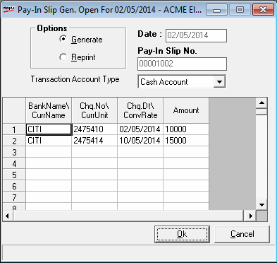

How to reach: Cash > Franchisee A/C > Pay-in Slip Generation
The pay-in slip generation window is displayed.

In this window you can execute the following functions.
Generate: Select to create a new Pay-in Slip.
Reprint: Select to print any of the existing Pay-in Slips.
Date: The records pertaining only to this date are processed.
Pay-In Slip No.: This number gets generated automatically if you select the option, Generate. For the Reprint option, this number has to be provided.
Transaction Account Type: Select the required account type, either Credit Account or Cash Account, from the drop down list.
Grid: Displays details of the Pay-in Slip according to the option (Generate/ Reprint) selected.
With the Generate option, the grid displays details of the payments made to HO, for which Pay-in Slip is not printed.
With the Reprint option, the grid displays details with respect to the Pay-in Slip number provided.